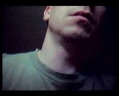

🙂 About Me
🙂 About melcom
Meet the person behind the music, aliases, and software projects. This page brings together my Demoscene story, creative setup, favorite plugins, musical inspirations, and a few of the worlds I enjoy beyond music.

Behind the music and code
Andreas Thomas Urban
- Creative since 1984
- Demoscene musician
- Music and software
It all began in 1984 with a Commodore C-64. For many years, I have been writing electronic music for the Demoscene. After a break of more than 10 years, I started creating again. Over the course of my journey, I have written a lot of music, although not everything has been released.
My work moves between classic trackers, modern music production, sound design, and small software tools built to make creative work easier.
🔗 Pseudonyms
Over the years and through various projects, quite a few names have accumulated. Each one represents a specific creative phase or a community I was active in.
- melcom
- Andreas melcom Urban
- MEL
- Dark Rhythms
- Urbi-Vice
- Urbi
- TLN
- MB
- Zlatan
- Skylezz
- Distance
- Crumble
Creative Toolkit
The software and hardware behind my current workflow.
🔗 My Creative Toolkit
These are the tools and hardware at the heart of my current workflow. The setup continues to evolve as I explore new ways to create music, shape sounds, and develop my software projects.
Digital Audio Workstation (DAW) & Trackers
- OpenMPT (Open-source audio module tracker)
- FL Studio (Professional Digital Audio Workstation)
- Schism Tracker (Open-source audio module tracker)
- Impulse Tracker (Legacy module tracker)
Audio Editing
- Ocenaudio (Audio editor with VST plugin support)
Audio Utilities & Encoders
- melcom's FFmpeg Audio Normalizer (GUI Edition) (Audio volume normalizer tool)
- Lame (Audio encoder)
- Lame Front-End (GUI for LAME encoder)
Hardware & Playback
- beyerdynamic DT 990 PRO (Headphones)
- ESI - U22 XT (Professional 24-bit USB audio interface)
- Dolby Access (Spatial sound for Windows 11)
🔗 My Favorite VST Plugins
I use the following VST plugins in conjunction with OpenMPT. I have and use many other plugins, but these are my absolute favorites!
Mastering & Dynamics
- TDR Nova (Free dynamic EQ) NEW
- VladG Limiter N°6 (Free mastering limiter) NEW
- PSP VintageWarmer2 (Paid multiband compressor)
Analysis Plugins
- SPAN (Free spectrum analyzer)
Audio Effects
- Electri-Q - or the posihfopit edition (Free EQ/Filter)
- PaulXStretch (Free extreme time-stretch) - I use plugin version 1.2.4 with OpenMPT.
- Softube Saturation Knob (Free analog-style saturation effect) NEW
- Chow Tape Model (Free tape machine emulation) NEW
- TAL-Reverb-4 (Free vintage-style plate reverb) NEW
Specializers
- A1StereoControl (Free stereo width and imaging tool) NEW
Musical Inspirations
Artists and composers whose work has stayed with me.
🔗 Favorite Musicians (Demoscene)
The Demoscene is full of incredibly talented musicians. The following artists have particularly inspired me over the years and helped shape my own style.
- Saga Musix
- Virgill
- Hunz
- Netpoet
- h0ffman
- ...and so many more.
🔗 Favorite Musicians (Film & Game)
Outside of the Demoscene, there are composers whose work I deeply admire. Their ability to create moods and tell stories through music is a huge source of inspiration.
Beyond Music
Stories, games, films, and other worlds that inspire or entertain me.
🔗 Favorite Audiobooks
The Witcher Series by Andrzej Sapkowski (DE / US)
🔗 Favorite Games
When I'm not making music, I love to dive into other worlds. Here are some of the games that have captivated me the most with their story, atmosphere, and design.
- The Witcher 3
- Baldur's Gate 3
- Hellblade: Senua's Sacrifice
- A Plague Tale: Innocence & Requiem
- Batman - Arkham Collection
- Deus Ex: Human Revolution & Mankind Divided
- Tomb Raider trilogy
- Kingdoms of Amalur: Re-Reckoning
- The Elder Scrolls V: Skyrim
- Horizon Zero Dawn
- Cyberpunk 2077
- No Man's Sky
- ...and many more.
There are always more worlds waiting.View my GOG.com wishlist
🔗 Other Interests (Movies & Series)
I enjoy watching movies and TV shows. Listing them all would be too much, so here are just a few: The Witcher, Dark, The Expanse, Grimm, Supernatural, Fargo, Game of Thrones, Penny Dreadful, The Last Kingdom, Serenity, Spartacus, Ozark, Poldark, Reign, Outlander, Chilling Adventures of Sabrina, The Magicians and many more.
I also like movies and series (thrillers, dramas, or crime stories) from France, England, Austria, Germany, Switzerland, and Scandinavia. They are always so raw and usually have a dark story.
I also watch many movies from China, Japan, and South Korea. Movies such as: The Chaser, I Saw the Devil, A Bittersweet Life, New World (Sinsegye), The Wailing, IP Man, Confession of Murder, The Yellow Sea, Wara no tate (Shield of Straw) and many more.
That should be enough information for the moment ... 😏